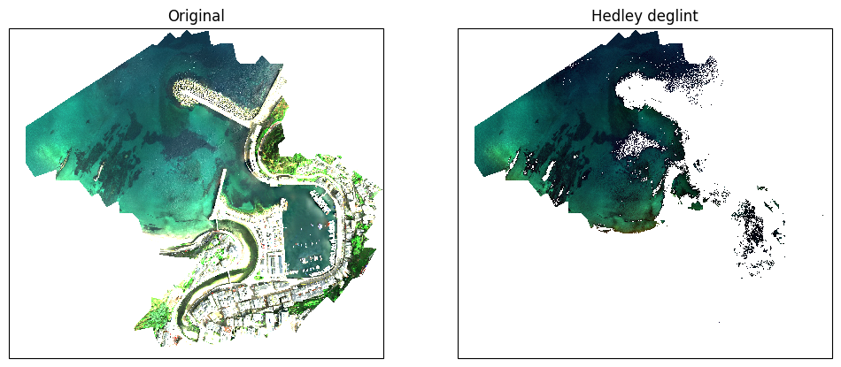
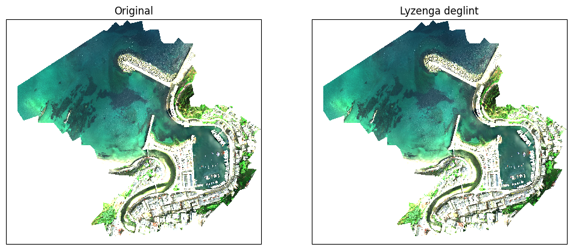
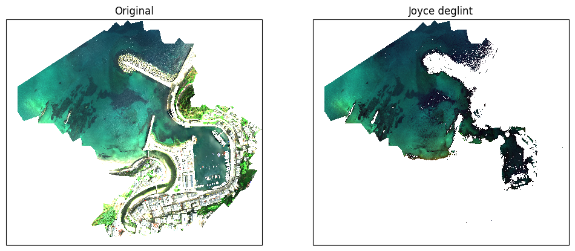
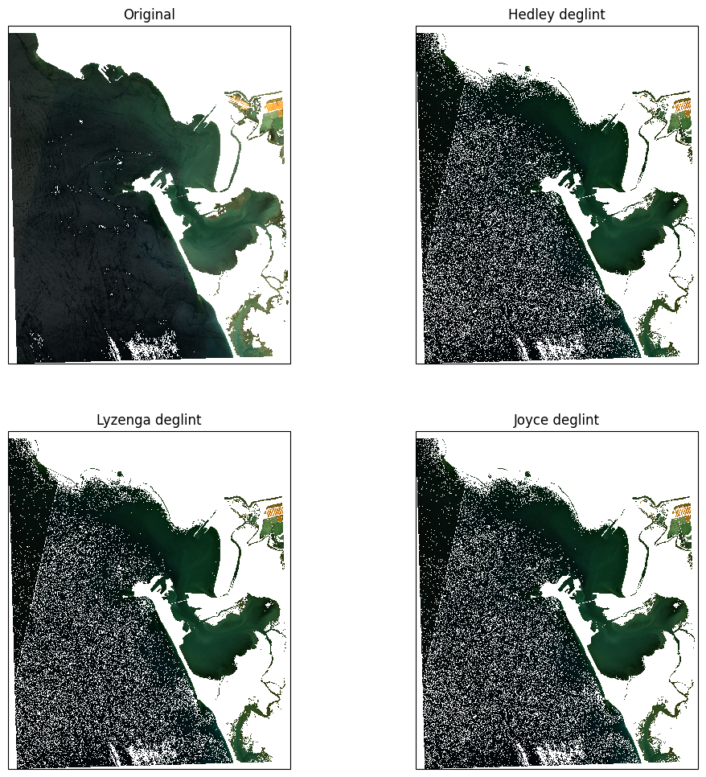

Sunglint Removal#
[1]:
import matplotlib.pyplot as plt
import geopandas as gpd
import numpy as np
import rasterio
import sys
import sensingpy.preprocessing.deglinting as deglinting
import sensingpy.reader as reader
import sensingpy.plot as plot
from sensingpy.image import Image
from sensingpy.enums import SENTINEL2_BANDS
[2]:
import warnings
warnings.filterwarnings("ignore")
Data loading#
[3]:
filename = r"D:\UAVs\data\rasters\downsample\20230426_nan_average_downsampling_x5_y5.tif"
uav = reader.open(filename)
uav.rename({"Band 1": "Blue", "Band 2": "Green", "Band 3": "Red", "Band 4": "NIR"})
[3]:
<xarray.Dataset> Size: 96MB
Dimensions: (y: 2053, x: 2327)
Coordinates:
* y (y) float64 16kB 4.825e+06 4.825e+06 ... 4.824e+06 4.824e+06
* x (x) float64 19kB 6.987e+05 6.987e+05 ... 6.995e+05 6.995e+05
projection int64 8B 0
Data variables:
Blue (y, x) float32 19MB nan nan nan nan nan ... nan nan nan nan nan
Green (y, x) float32 19MB nan nan nan nan nan ... nan nan nan nan nan
Red (y, x) float32 19MB nan nan nan nan nan ... nan nan nan nan nan
NIR (y, x) float32 19MB nan nan nan nan nan ... nan nan nan nan nan
Band 5 (y, x) float32 19MB nan nan nan nan nan ... nan nan nan nan nan
Attributes:
_FillValue_band_1: -32767.0
_FillValue_band_2: -32767.0
_FillValue_band_3: -32767.0
_FillValue_band_4: -32767.0
_FillValue_band_5: -32767.0
tiff_AREA_OR_POINT: Area
grid_mapping: projectionLoad Deep Water Area#
[4]:
shapes = gpd.read_file(r"D:\UAVs\data\shapefiles\deep_water\deep_water.shp").to_crs(uav.crs).geometry
deep_area_mask = rasterio.features.geometry_mask(geometries = shapes,
out_shape = (uav.height, uav.width),
transform = uav.transform,
invert = True)
Masking#
Hedley#
[5]:
to_correct = uav.select(["Blue", "Green", "Red"])
nir_band = uav.select("NIR")
blue, green, red = deglinting.hedley(deep_area_mask, to_correct, nir_band)
for band, data in zip(["Deglint Blue", "Deglint Green", "Deglint Red"], [blue, green, red]):
uav.add_band(band, data)
fig, axs = plot.get_geofigure(uav.crs, 1, 2)
plot.plot_rgb(uav, 'Red', 'Green', 'Blue', ax=axs[0], brightness=15)
axs[0].set_title("Original")
plot.plot_rgb(uav, 'Deglint Red', 'Deglint Green', 'Deglint Blue', ax=axs[1], brightness=15)
axs[1].set_title("Hedley deglint")
[5]:
Text(0.5, 1.0, 'Hedley deglint')

Lyzenga#
[6]:
to_correct = uav.select(["Blue", "Green", "Red"])
nir_band = uav.select("NIR")
blue, green, red = deglinting.lyzenga(deep_area_mask, to_correct, nir_band)
for band, data in zip(["Deglint Blue", "Deglint Green", "Deglint Red"], [blue, green, red]):
uav.add_band(band, data)
fig, axs = plot.get_geofigure(uav.crs, 1, 2)
plot.plot_rgb(uav, 'Red', 'Green', 'Blue', ax=axs[0], brightness=15)
axs[0].set_title("Original")
plot.plot_rgb(uav, 'Deglint Red', 'Deglint Green', 'Deglint Blue', ax=axs[1], brightness=15)
axs[1].set_title("Lyzenga deglint")
[6]:
Text(0.5, 1.0, 'Lyzenga deglint')

Joyce#
[7]:
to_correct = uav.select(["Blue", "Green", "Red"])
nir_band = uav.select("NIR")
blue, green, red = deglinting.joyce(deep_area_mask, to_correct, nir_band)
for band, data in zip(["Deglint Blue", "Deglint Green", "Deglint Red"], [blue, green, red]):
uav.add_band(band, data)
fig, axs = plot.get_geofigure(uav.crs, 1, 2)
plot.plot_rgb(uav, 'Red', 'Green', 'Blue', ax=axs[0], brightness=15)
axs[0].set_title("Original")
plot.plot_rgb(uav, 'Deglint Red', 'Deglint Green', 'Deglint Blue', ax=axs[1], brightness=15)
axs[1].set_title("Joyce deglint")
[7]:
Text(0.5, 1.0, 'Joyce deglint')

Extra: Using Satellite Images (Sentinel-2)#
[8]:
filename = r"D:\batimetria\cadiz\satelite\local_original\Pleamar\20240719_S2B_BDC_29SQA_L2W.nc"
satellite = reader.open(filename)
satellite.rename_by_enum(SENTINEL2_BANDS)
satellite.rename({'Rrs_B2': 'Blue', 'Rrs_B3': 'Green', 'Rrs_B4': 'Red', 'Rrs_B8': 'NIR'})
satellite.drop_bands( set(satellite.band_names).difference(['Blue', 'Green', 'Red', 'NIR']) )
[8]:
<xarray.Dataset> Size: 269MB
Dimensions: (y: 2838, x: 2371)
Coordinates:
transverse_mercator (y, x) float64 54MB ...
lon (y, x) float64 54MB ...
lat (y, x) float64 54MB ...
* x (x) float64 19kB 7.305e+05 7.306e+05 ... 7.542e+05
* y (y) float64 23kB 4.06e+06 4.06e+06 ... 4.031e+06
Data variables:
Blue (y, x) float32 27MB ...
Green (y, x) float32 27MB ...
Red (y, x) float32 27MB ...
NIR (y, x) float32 27MB ...
Attributes: (12/382)
generated_by: ACOLITE
generated_on: 2024-07-20 00:17:20 Hora de ve...
contact: Quinten Vanhellemont
product_type: NetCDF
metadata_profile: beam
metadata_version: 0.5
... ...
scene_download: False
EARTHDATA_u: icman
EARTHDATA_p: Icman_2022
runid: 20240720_001623
inputfile: D:/NRT-Sentinel2/outputs\raw\S...
grid_mapping: transverse_mercatorLoad Deep Water Area#
[9]:
shapes = gpd.read_file(r"D:\repos\geopy_usage\areas\cadiz_deep_water\cadiz_deep_water.shp").to_crs(satellite.crs).geometry
deep_area_mask = rasterio.features.geometry_mask(geometries = shapes,
out_shape = (satellite.height, satellite.width),
transform = satellite.transform,
invert = True)
All Methods#
[10]:
to_correct = satellite.select(["Blue", "Green", "Red"])
nir_band = satellite.select("NIR")
# Hedley deglinting
blue, green, red = deglinting.hedley(deep_area_mask, to_correct, nir_band)
for band, data in zip(["Hedley Blue", "Hedley Green", "Hedley Red"], [blue, green, red]):
satellite.add_band(band, data)
# Lyzenga deglinting
blue, green, red = deglinting.lyzenga(deep_area_mask, to_correct, nir_band)
for band, data in zip(["Lyzenga Blue", "Lyzenga Green", "Lyzenga Red"], [blue, green, red]):
satellite.add_band(band, data)
# Joyce deglinting
blue, green, red = deglinting.joyce(deep_area_mask, to_correct, nir_band)
for band, data in zip(["Joyce Blue", "Joyce Green", "Joyce Red"], [blue, green, red]):
satellite.add_band(band, data)
fig, axs = plot.get_geofigure(satellite.crs, 2, 2, figsize=(12, 12))
axs = axs.ravel()
plot.plot_rgb(satellite, 'Red', 'Green', 'Blue', ax=axs[0], brightness=15)
axs[0].set_title("Original")
plot.plot_rgb(satellite, 'Hedley Red', 'Hedley Green', 'Hedley Blue', ax=axs[1], brightness=15)
axs[1].set_title("Hedley deglint")
plot.plot_rgb(satellite, 'Lyzenga Red', 'Lyzenga Green', 'Lyzenga Blue', ax=axs[2], brightness=15)
axs[2].set_title("Lyzenga deglint")
plot.plot_rgb(satellite, 'Joyce Red', 'Joyce Green', 'Joyce Blue', ax=axs[3], brightness=15)
axs[3].set_title("Joyce deglint")
[10]:
Text(0.5, 1.0, 'Joyce deglint')
